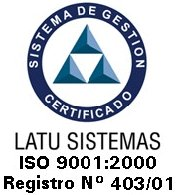

|
 |
PROCEDIMIENTO A SEGUIR EN CASO DE ACCIDENTES DE TRABAJO EN CADI |
PR-ACC-01 |
|
Versión 02 |
||
|
|
|
VERSIÓN |
|
2 |
REVISIONES |
||||
|
|
FECHA |
NOMBRE |
CARGO |
FIRMA |
|
1 |
/ / |
|
|
|
|
2 |
/ / |
|
|
|
|
3 |
/ / |
|
|
|
Nº
DE HOJAS
2
COPIA NO CONTROLADA
|
ELABORADO |
REVISADO |
APROBADO |
|
|
|
|
|
|
|
|
|
FECHA / / |
FECHA / / |
FECHA / / |
OBJETIVO: establecer un procedimiento eficaz y eficiente para actuar en caso de ocurrir un accidente de trabajo al personal de CADI..
ALCANCE: Administración , Recepción, Tisaneria, Asistentes Dentales, Consultorios, Sucursales.
RESPONSABLE: Todo funcionario de CADI.
DESARROLLO.-
Si a un funcionario CADI le ocurre un accidente de trabajo , sea cual sea su origen deberá:
Llamar a un Director de CADI,(Dr.Sarniguet / Dr. Montes / Dra. Cetta o Dr. Bocage) para informar el accidente
b) Dirigirse a Emergencia de Médica Uruguaya o directamente al Banco de Seguros del Estado.
Existe un procedimiento de asistencia inmediata, que se desarrolla a continuación, el cual puede o no ser realizado, ya que “NO SUSTITUYE DE NINGUNA MANERA LA ASISTENCIA QUE DEBERAN DARLE AL TRABAJADOR EN EMERGENCIA DE MUCAM O EN EL BANCO DE SEGUROS DEL ESTADO”
Si el funcionario CADI ha sufrido:
Pinchazos y heridas:
lavar inmediatamente la zona cutánea lesionada con abundante agua y jabon
permitir el sangrado en la herida o punción accidental
realizar antisepsia de la herida con alcohol 70º (3 minutos), alcohol yodado, tintura de yodo al 2% o yodóforo
dependiendo del tamaño de la herida cubrir la misma con gasa estéril.
Contacto con mucosas (ojo, nariz, boca):
lavar abundantemente con agua o suero fisiológico
realizar antisepsia de la herida con alcohol 70ª ( 3 minutos) , alcohol yodado, tintura de yodo al 2% o yodóforo
El Directivo de CADI que reciba la notificación deberá ponerse en contacto antes de cumplidas las 48 horas con el Banco de Seguros para denunciar el accidente de trabajo.
fuente BIOSEGURIDAD EN LA CLÍNICA ODONTOLÓGICA
FUENTE : BIBLIOTECA DE LA FACULTAD DE ODONTOLOGÍA TEL 4873048 INT109